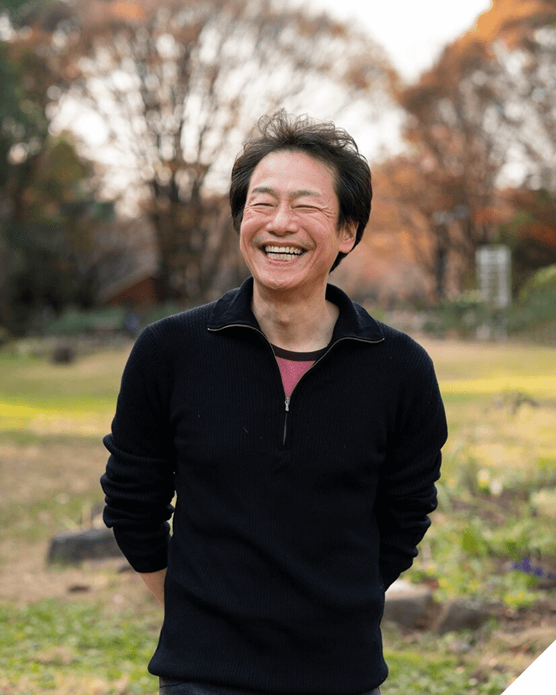

他們已經踏上職旅
聽聽他們的故事
每一段職涯轉型都有獨特挑戰，這些曾經與你有相同疑惑的夥伴，現在正過著他們嚮往的生活
數位游牧 2 年

轉型成功的設計師
從企業設計師轉職自由接案，比我想的難太多。收入不穩時我幾乎想放棄，是職旅顧問幫我找回方向與差異化。半年後，我不僅維持收入，還能自由挑案，最重要的是，我終於有時間陪爸媽。
視覺設計師
郭敏迪 (34y)
數位游牧 2 年

數位遊牧生活實踐者
兩年前我只想環遊世界，卻不知道怎麼開始。職旅給了我遠端工作與生活規劃的指導。現在我在五個國家工作過，收入比以前多 20%。每次打開電腦，看見窗外不同的風景，都慶幸當初那一個決定。
內容策略師
林雨潔 (29y)
數位遊牧 3 年

中年轉型的工程師
59 歲被裁員時，我以為職涯結束了。職旅顧問不只幫我轉職，更讓我相信自己還有價值。現在我每月穩定接案、收入翻倍。年齡不是限制，只是我還沒找到對的方向。
視覺設計師
張世明 (62y)
數位游牧 2 年

斜槓媽媽的平衡人生
育兒與工作讓我喘不過氣，想辭職又怕失去經濟自由。職旅教我將專業變現為線上課程，收入穩定、工時少了三分之二。我第一次真正感覺到：我熱愛的事也能成為工作。
育兒作家
陳佳蓉 (32y)
數位遊牧 1 年

從企業高管到生活設計師
身為主管十五年，我以為這就是我的路，直到健康亮紅燈。職旅讓我重新定義「成功」，不只是賺錢，而是活得有意義。現在我用三天工作換來更多陪伴與自由。
心靈成長教練
李明哲 (42y)
數位遊牧 0.5 年

初入職場卻選擇不同路徑
大學畢業後我沒進大公司，反而成了自由攝影師。職旅不只幫我釐清方向，也教我怎麼經營收入與客戶。最感動的是，我終於知道走另一條路，也可以有人陪。
文化攝影師
吳承恩 (25y)